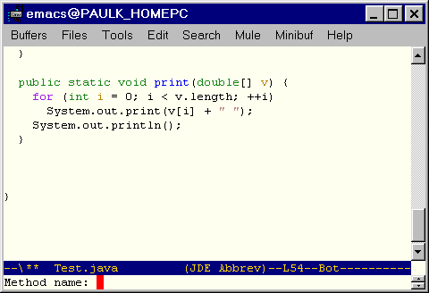
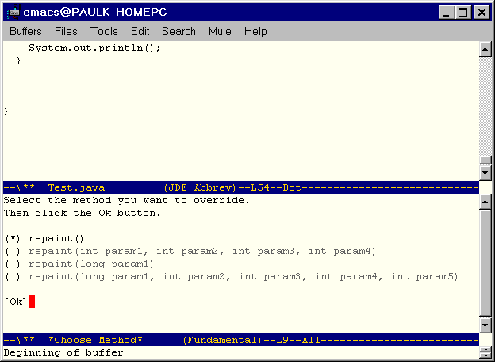
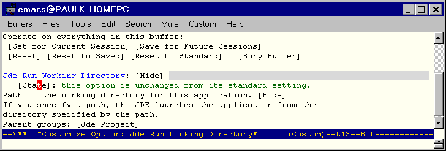

Welcome to the JDEE User's Guide. This guide explains how to use the JDEE to develop Java applications and applets. The guide assumes that you are familiar with Emacs, the Java programming language, and Java development tools provided by Sun Microsystems, Inc.
Note
This guide and the JDEE user interface use the term "JDK" to refer to Sun's Java 2 Software Development Kit (SDK) and its predecessors.
The Java Development Environment for Emacs (JDEE) is an Emacs Lisp package that interfaces Emacs to third-party Java application development tools, such as those provided by Sun Microsystems as part of its JDK. The result is an integrated development environment (IDE) comparable in power to many commercial Java IDEs. Features include:
source code editing with syntax highlighting and auto indentation
automatic completion of class fields and methods
compilation with automatic jump from error messages to responsible line in the source code.
generates class and method skeletons automatically
run Java application in an interactive (comint) Emacs buffer
integrated debugging with interactive debug command buffer and automatic display of current source file/line when stepping through code
browse JDK doc, using the browser of your choice
browse your source code, using the Emacs etags facility or a tree-structured speedbar.
supports latest version of JavaSoft's Java Development
runs on any platform supported by Emacs and Sun's Java SDK (e.g., Win95/NT and Solaris)
easily and infinitely customizable
works with FSF Emacs and XEmacs
The JDE requires the following software:
FSF Emacs or XEmacs on Unix platforms; the 20.6.1 version (or later) of NT/Emacs on Windows platforms, for general source file editing and tool integration functions.
Java Development Kit (JDK) or compatible set of Java development tools (compiler, virtual machine, debugger, class libraries, etc.)
Web browser (e.g., Netscape or Internet Explorer) for viewing documentation.
latest versions of Eric Ludlam's speedbar, semantic, and eieio packages available for download from the CDET home page
The elib package available from the JDE web site
bashor another Unix-style shell highly recommended for Windows95/NT environments. The cygwin Unix emulation package for Windows from Red Hat includesbash.
The JDEE distribution includes the following files:
jde.el. Defines jde-mode, a major Emacs mode for developing Java code.jde-run.el. Runs Java applications and appletsjde-db.el. Interfaces Emacs tojdb, the command-line debugger that comes with the JDK.jde-gen.el. Contains code generation templates.bsh.jar. Compiled files for the BeanShell, a Java source code interpreter developed by Pat Neimeyer.beanshell.el. Provides an Emacs interface to the BeanShell interpreter.jde-wiz.el. Provides "wizards" that generate skeleton implementations of interfaces and skeleton overrides of methods declared by superclasses.jde-complete.el. Automatic field and method completion package.jde-parse.el. Java parser package.java.bnf. Java grammar used to generate the JDE's lisp-based Java parser.jde-bug.el. JDEbug user interface package.jde-dbs.el. JDEbug low-level command interface package.jde-dbo.el. JDEbug output processing functions.source code, jar files, and documentation for the Java components of the JDE.
jtagsis a bash shell script that tags Java source hierarchies.jtags.cshis a c shell script that tags Java source heierarchies.
See Downloading the JDE on the JDE website for instructions on downloading the most recent version of the JDE.
See the JDE Installation Guide on the JDE website for information on installing the JDE on your system.
Please send bug reports and enhancement suggestions to Paul Kinnucan.
The JDEE relies on command-line Java development tools, such
as those supplied by Sun Microsystems as part of its Java 2
Software Development Kit (SDK) also known as a Java Development
Kit (JDK). Before you can use the JDEE to compile, debug, or run
an application, you must tell it where the Java compiler,
debugger, and virtual machine are located on your system. The
JDEE assumes that the compiler, debugger, and vm are named
javac, jdb, and
java, respectively, and that they are
located on your system's command path. If these tools are not
located on the system command path or have different names, you
must tell the JDEE where they are located. The JDEE provides
customization variables for specifying the locations of
individual tools.
However, if you are using one or more versions of Sun's JDK or a clone of the Sun JDK, the easiest way to specify the location of the external development tools is to register the version of the JDK that you intend to use. It is especially advantageous to register a JDK, if you intend to use multiple versions of the JDK. The reason? Registering each version of the JDK allows you to change JDKs by changing a single customization variable. The following sections explain how to register and select JDKs.
To register a version of the JDK with the JDEE:
Start Emacs.
Type
M-x customize-variableand pressEnterEmacs prompts you to enter the name of a variable to customize.
Enter
jde-jdk-registryand pressEnter.The
jde-jdk-registrycustomization buffer appears.
Click the
INSbutton.The entry for the JDK appears.

Enter the version number of the JDK and the path of the directory in which the JDK is installed.
Repeat the preceding steps until you have entered the versions and paths of all versions of the JDK that you wish to use with the JDEE.

Click the
Statebutton.The
Statemenu appears.Select
Save for Future Sessionsfrom theStatemenu.Note
This saves the setting of
jde-jdk-registryin your.emacsfile.Click the
Finishbutton to dismiss the customization buffer.
To select a JDK:
Type
M-x customize-variableand pressEnterEmacs prompts you to enter the name of a variable to customize.
Enter
jde-jdkand pressEnter.The
jde-jdkcustomization buffer appears.
The buffer lists the JDKs that you have previously registered (see Registering a JDK).
Click the radio button next to the version of the JDK you want to use.
Click the
Statebutton.The
Statemenu appears.Select
Save for Future Sessionsfrom theStatemenu.Click the
Finishbutton to dismiss the customization buffer.
Note
This procedure saves your JDK selection in your
.emacs file so that it applies to all
projects. You can configure the JDEE to use different JDKs
for different projects by saving your customization in a
project file. See Using
Project Files or more information.
To edit an existing Java source file, load it into an Emacs
buffer by executing C-x C-f. Loading a Java source file
into a buffer causes the buffer to enter into jde-mode,
a variant of java-mode, which is in turn a variant of
the standard Emacs cc-mode for editing source files
written in C and related languages. jde-mode offers all the
specialized source file editing commands of cc-mode plus
functions for creating, compiling, building, running, and debugging Java source files.
You can invoke the commands by selecting them from the JDE
menu that jde-mode displays on the Emacs menu bar or by
typing the commands in the Emacs minibuffer.
 |
The JDE provides complete support for generating HTML documentation for Java classes from comments inserted into the source code for those classes.
See also
To insert a skeleton javadoc comment for a class or method,
position point in the first line of the method or class and
select JDE->Document from the
Emacs menubar or type C-c C-v j.
To customize the javadoc skeletons, select JDE->Options->Project->Javadoc from the Emacs menubar.
Thanks...
to David Ponce for developing the JDE's javadoc comment generation facility.
To generate documentation for the current project, open any
source file in the project and select Make
Doc from the JDE menu or
enter M-x jde-javadoc-make.
The jde-javadoc-make command runs the JDK's
javadoc program to generate the documentation. The
javadoc command must be on your system's
command path.
The jde-javadoc-make command uses
jde-global-classpath as the
-classpath and jde-sourcepath
as the -sourcepath option for
generating the doc. You can specify all other javadoc options
via JDE customization variables. To specify the options,
select Project->Options->Javadoc
from the
JDE menu. Use
jde-javadoc-gen-packages to specify the
packages, classes, or source files for which you want to
generate javadoc. If this variable is
nil, the
jde-javadoc-make generates javadoc for
the Java source file in the current buffer.
Note
Thanks to Sergey A Klibanov for developing the JDE's javadoc generation facility.
The JDEE allows you to use abbreviations for Java keywords and control flow constructs. The following sections explain how to use these abbreviations.
The JDEE defines a set of abbreviations for Java keywords.
When you type one of these abbreviations followed by a space
in a Java source buffer, the JDE optionally expands the
abbreviation into the keyword. For example, when the
abbreviation mode is enabled, you need only type
fa followed by a space to enter the Java
keyword false. To enable or disable
abbreviation mode by default for a project, select
JDE->Project->Options
->General
and toggle the boolean variable
jde-enable-abbrev-mode. To toggle
abbreviation mode on or off during a session, select
JDE->Code Generation->Modes->Abbrev. To change, remove, or add an abbreviation, edit
the variable jde-mode-abbreviations in the
project customization buffer.
Note
The JDE's Java keyword expansion facility is based
on the Emacs abbrev-mode facility. For
more information, see the Emacs user manual.
The JDEE defines abbreviations for Java control flow structures, such as if-then-else. When you enter the abbreviation followed by a space, the JDE expands the abbreviation into a corresponding control structure template.
Example 1. Expanding a Control Flow Abbreviation
The if-then-else abbreviation
ife
expands to the control flow structure
if ( ) { } // end of if () else } // end of if ()else
The JDE defines the following abbreviations for control structures.
Table 1. Control Flow Abbreviations
| Statement | Abbreviation |
|---|---|
if-then | if |
else | else |
if-then-else | ife |
else-if | eif |
while | while |
for | for |
for (int
I=0;I<UL;I++) | fori |
for (Iterator i = c.iterator();
i.hasNext();) | foriter |
main method | main |
switch | switch |
case | case |
try | try |
catch | catch |
try finally | tryf |
finally | finally |
Note
You must enable the JDE's Java keyword abbreviation mode to use the control flow abbreviations. See Java Keyword Completion for more information.
The JDE's Java control flow templates support two options
for opening brace placement: placement on the first line of
the template (Kerningham & Ritchie Style, the default)
and placement on a separate line. Type M-x
customize-variable jde-gen-k&r to specify
the style you prefer.
You can customize the templates to suit any indentation style. To customize the templates, select Project->Options->Autocode from the JDE menu.
Use the jde-gen-define-abbrev-template
function to define your own control flow abbreviation in
your .emacs file. For example, the
following code defines an abbreviation for an else clause.
(jde-gen-define-abbrev-template "melse" '('> "else {" '> 'n
'> 'r 'n "}"))
The jde-gen-define-abbrev-template
function takes two arguments. The first argument is a string
that specifies the abbreviation. The section argument is a
list defining the text that replaces the abbreviation. The
list can contain any of the following elements.
Table 2. Template Elements
| Element | Usage |
|---|---|
| A string. | The string is inserted into the buffer at point. |
The symbol 'p. | This position is saved in
tempo-marks. |
The symbol 'r. | If tempo-insert is called
with ON-REGION non-nil the
current region is placed here. Otherwise it works
like 'p. |
(p PROMPT <NAME>
<NOINSERT>) | If tempo-interactive is
non-nil, the user is prompted in the minbuffer with
PROMPT for a string to be
inserted. If the optional parameter
NAME is non-nil, the text is
saved for later insertion with the
s tag. If there already is
something saved under NAME that
value is used instead and no prompting is made. If
NOINSERT is provided and non-nil,
nothing is inserted, but text is still saved when a
NAME is provided. For clarity,
the symbol 'noinsert should be
used as argument. |
(P PROMPT <NAME>
<NOINSERT>) | Works just like the previous element, but
forces tempo-interactive to be
true. |
(r PROMPT <NAME>
<NOINSERT>) | Like the previous, but if
tempo-interactive is
nil and
tempo-insert is called with
ON-REGION non-nil, the current
region is placed here. This usually happens when you
call the template function with a prefix
argument. |
(s NAME) | Inserts text previously read with the
(p ..) construct. Finds the
insertion saved under NAME and
inserts it. Acts like 'p if
tempo-interactive is
nil. |
'& | If there is only whitespace between the line start and point, nothing happens. Otherwise a newline is inserted. |
'% | If there is only whitespace between point and end-of-line nothing happens. Otherwise a newline is inserted. |
'n | Inserts a newline. |
'> | The line is indented using
indent-according-to-mode. Note
that you often should place this item after the text
you want on the line. |
'n> | Inserts a newline and indents line. |
'r> | Like r, but it also indents
the region. |
'o | Like '% but leaves the point
before the new line. |
| Anything else. | It is evaluated and the result is treated as an
element to be inserted. One additional tag is useful
for these cases. If an expression returns a list
'(l foo bar), the elements after
'l will be inserted according to
the usual rules. This makes it possible to return
several elements from one expression. |
Some templates optionally prompt you for items to insert
into the template. To enable prompting, set the variable
tempo-interactive to a
non-nil value in your
.emacs file.
Both Emacs and the JDEE provide commands for completing incomplete
expressions. Emacs provides commands that work for any expression
but only if the completions exist in an open buffer. The JDEE
provides completion commands that work for any Java method or field
name that exists on jde-global-classpath.
The following sections explain how to use completion facilities
supplied by the JDEE and by Emacs itself.
The JDEE provides comamnds that can complete an incomplete field or method name. All the methods determine the set of possible completions for an incomplete field or method name at point. They differ in how they present the completions to you for selection. The commands include:
jde-complete-in-lineThis command uses the first completion that it finds to complete the method or field name at point. If multiple completions exist, it allows you to cycle through the completions, each completion replacing the previous in the source buffer. See Using In-Line Completion for more information.
jde-complete-menuThis command displays a menu of possible completions for the incomplete method or field name at point. It enters the completion that you select in the source buffer. See Using Menu-Based Completion for more information.
jde-complete-minibufThis command uses the minibuffer to display possible completions for the incomplete method or field name at point. The comamnd enters the completion that you select in the source buffer. See Using Minibuffer-Based Completion for more information.
jde-completeThis is the JDEE's user-definable "standard" completion command. It delegates completion to one of the JDEE's other completion commands (
jde-complete-menuby default) or to a custom completion function that you specify (see Selecting a Completion Method for more information.) Thejde-completecommand is bound by default to the key combinationC-c C-v C-.. If you prefer another binding, use the customization variablejde-key-bindingsto change the binding.
The JDEE's field and method completion commands use the Beanshell to run Java code that in turn uses Java's reflection (class introspection) capability to determine the fields and methods defined for the class of object at point. The commands start the Beanshell if it is not running. This can cause a noticeable delay in completion the first time it is used in a session. The response can also be slow for classes containing many methods and fields.
Note
See Speeding Up Completion for some tips on how you can dramatically speed up field and method completion.
Completion works only for compiled classes that reside in the
classpath defined by jde-global-classpath,
if set, otherwise by the CLASSPATH
environment variable when the Beanshell starts. Thus, if the
JDEE is unable to complete a method or field, make sure that
the class that defines the field or method is compiled and
exists on the classpath defined by
jde-global-classpath, if set, otherwise by
the CLASSPATH environment variable.
The JDEE completion commands work for all of the following cases.
objects referenced by variables declared in the current buffer
static fields and methods
fields and methods of objects defined by the current class and its parent
Names of fields and methods of the current class must start with
thisor.(period). Names of fields and methods declared by the parent of the current class must start withsuper.For example, this command completes
. ^ this. ^ super. ^
objects referenced by the fields of objects referenced by variables declared in the current class or its parent or by static fields
For example, this command completes
System.out.prin ^
objects returned by methods of objects referenced by variables defined in the current
For example, this command completes
Toolkit.getDefaultToolkit().get ^
objects referenced by method parameters
For example, this command completes
void setColor(String color) { color.get ^ }
The JDEE's generic completion command,
jde-complete delegates completion to one
of several specific completion commands supplied by the JDEE
or to a custom completion method that you supply. This
allows you to customize jde-complete to
use the completion method that you prefer.
To specify your preferred completion method:
Open a customization buffer for
jde-complete-function.
Select the completion command that implements the completion method you prefer.
If you selected
Customas your preferred completion function, enter the name of the custom completion function in the adjacent edit field, replacing the existing contents (ignoreby default.).Save your selection in your
.emacsor project file.
The jde-complete-menu displays a
popup menu of completions for the method or field name at
point. Selecting a completion from the menu causes the
command to use it to complete the method or field at point.
This section assumes that you have selected
jde-complete-menu as your standard
completion command.
To select completions from a menu:
Position point immediately following the partially complete field or method name.

Type the
C-c C-v C-.key combination.A menu of completions pops up.

Select the desired completion from the menu.
The JDEE inserts the completion at point in the buffer.

The jde-complete-in-line command allows
you to select completions at the point of insertion in the
source buffer. The command finds all the fields and methods
that complete the name at point. It then inserts the first
potential completion in the buffer at point. Repeatedly
executing the command causes the JDEE to cycle through the
other potential completions. If the completion is a method
name, the command completes the method name and displays the
method signature in the minibuffer.
The jde-complete-in-line command is bound
to C-c C-v .. You can use this
combination to invoke the command or C-c C-v
C-., if you have selected this command as your
preferred completion method. The following examples use the
C-c C-v . combination.
Example 1. Completing a String Method Name
Typing C-c-C-v-.
String s; s.get ^
completes the method name at point as follows
String s; s.getClass( ^
and displays
java.lang.Class getClass()
in the minibuffer. Repeatedly typing
C-c-C-v-.
cycles through all the other get methods for the Java
String class.
Here are two ways you can significantly speed up field and method completion:
Byte-compile the eieio and JDEE packages.
The beanshell package, the Emacs interface to the BeanShell, is based on the eieio object-oriented Lisp package for Emacs. Completion uses the BeanShell heavily to determine the class of the field or method at point. Thus compiling eieio and beanshell.el improves completion's performance, dramatically in my tests.
Import by class, not by package, in your Java files.
Every package import, e.g.,
java.util.*, requires invoking the BeanShell to determine the fully qualified name of the class at point (seejde-parse-get-qualified-name). A Beanshell invocation is by far the most time-consuming operation required for completion. Thus eliminating the use of package-level imports can significantly speed up completion.
Emacs provides dynamic completion commands that attempt to find completions for the word at point in the current buffer or other buffers.
Example 2. Using Dynamic Completion
Suppose that the current source buffer contains the class
names Component and
Container. Now suppose you enter
Co somewhere in the buffer and type
M-/.
The text Component replaces
Co in the buffer.
Typing
M-/
again changes Component to
Container. In this way, you can cycle
through all the possible completions for
Co in the current buffer.
Emacs provides two dynamic completion commands.
The dabbrev-expand command is bound to
the key combination
M-/
by default. It searches the current buffer for completions
of the word at point and, if none are found, other buffers
of the same type. For example, if the current buffer is a
Java source buffer, it searches other Java source buffers
for completions if none are found in the active buffer.
The hippie-expand command provides more
extensive search capabilities. See the docstrings for these
functions for more information.
The JDE provides the following code generation capabilities.
Code wizards
Code templates
The JDEE provides a set of commands that generate and organize import statements in the current buffer. The commands automate the following tasks:
Generate an import statement for the class at point (see Importing Classes).
Generate import statements for all classes in the current buffer that need import statements (see Importing All Classes).
Expand a package import statement into specific class imports (see Expanding Package Imports).
Collapse class imports into a package import statement (see Collapsing Class Imports).
Group import statements (see Grouping Imports).
Sort import statements alphabetically (see Sorting Imports).
Delete superfluous import statements (see Deleting Imports).
The JDE->Import->Class
(jde-import-find-and-import,
C-c
C-v
C-z) command
generates an import statement for the
class at point in the current buffer. It inserts the import
statement at the head of the buffer.
This command uses the BeanShell to search the classpath of the current project for classes that match the name of the class at point. The class name may be unqualified.
Note
The classpath that the import wizard searches for import
candidates is the classpath specified by the value of
jde-global-classpath for the current
project.
If the command finds more than one class of the same unqualified name on the current classpath, it prompts you to select one of the classes to import.
The customization variable
jde-import-excluded-classes allows
you to specify rules for excluding classes from
consideration for import into the current source file. If
the import command finds any classes on the classpath that
belong to the list of prohibited classes, it removes them
from the list of classes considered for import into the
current buffer.
You can use either regular expressions or Lisp functions to specify class exclusion rules. For each rule, you can also specify that all classes whose unqualified names match the rule be excluded from consideration for import. This is useful for preventing the JDEE from importing alternate implementations of standard Java classes that do not need to be imported.
For example, the default setting for
jde-import-excluded-classes includes a
rule to exclude all classes belonging to the
java.lang package because every Java
class implicitly imports this package. The default setting
for jde-import-excluded-classes also
excludes all unqualified synonyms of classes belonging to
the java.lang package. This prevents
importation of alternate implementations of these classes,
e.g., alternate implementations of
java.lang.String, included in some
commonly used class libraries and intended for internal use.
See the docstring for
jde-import-excluded-classes for more
information.
Thanks to ...
Len Trigg for contributing the initial implementation of the import wizard and to Martin Schwarmberger for significantly enhancing the import wizard.
The JDE->Code Generation->Import->All (jde-import-all,
C-c
C-v
z
) imports all the classes that need to be
imported into the current buffer.
The command imports all classes that meet the following conditions:
The class's base name begins with an uppercase letter.
The class's base name contains at least one noninitial lowercase letter.
The class is not already imported into the buffer.
The class is not in
jde-import-excluded-classes.The class exists on the current classpath.
If more than one import candidate with the same base name exists on the classpath, the JDEE displays a dialog that allows you to select one of the candidates.
Note
You can use the JDE->Code Generation->Import->Import All Unique (jde-import-all-unique
) command to avoid the dialog box. This command imports all classes
whose unqualified names appear only once on the classpath.
Thanks to ...
Phillip Lord for contributing the initial implementation of the Import All Wizard.
To expand a package import statement, select JDE->Code Generation->Import->Expand Package Imports
(jde-import-expand-imports). This command replaces
a package import statement, e.g.,
import java.io.*;
with import statements for the members of that package referenced by the current buffer, e.g.,
import java.io.BufferedReader; import java.io.InputStreamReader; import java.io.IOException;
To collapse class import statements in the current buffer into
package imports, select JDE->Code Generation->Import->Collapse Class Imports (jde-import-collapse-imports). This command
collapses imports for any package that contains as many as or more than the
number of imports specified by jde-import-collapse-imports-threshhold.
The default value of this variable is 2. This causes this command to collapse
imports for any package from which the current buffer imports two or more classes.
For example, this command, by default, collapses
import java.io.BufferedReader; import java.io.InputStreamReader; import java.io.IOException;
to
import java.io.*;
To organize import statements into groups of related imports, select
JDE->Code Generation->Import->Organize Imports (jde-import-organize). By default this command
groups import statements into two groups separated by a blank line. The first
group contains all imports from the java and javax packages. The other group
contains imports from all other packages. The imports are sorted alphabetically
in ascending order in each group, e.g.,
import java.io.InputStreamReader; import java.util.Hashtable; import javax.swing.JFrame; import javax.swing.JPanel; import jmath.LinearSystem; import jmath.Test;
The following variables allow you to customize the organization of imports into groups:
jde-import-group-functionThis variable allows you to specify a function that assigns imports to groups. The default group function is
jde-import-group-of, which uses rules specified by the following variable to assign imports to groups.jde-import-group-rulesThis variable specifies a list of rules for assigning import statements to group, e.g.,
'(("^javax\\." . "Swing")), Each rule consists of two parts: a regular expression and an optional group name specifier. Thejde-import-group-offunction assigns an import statement to the group if it matches the regular expression. The group name specifier is either a string that specifies the name or an index to a component of the regular expression to be used as the group name.jde-import-insert-group-namesSpecifies whether to insert an import group's name in the buffer.
jde-import-default-group-nameSpecifies the default name for an import group.
jde-import-blank-line-between-groupsSpecifies whether to insert a blank line between import groups.
jde-import-sorted-groupsSpecifies whether and how to sort groups of packages. Options include no sorting, in the order specified by grouping rules, or in ascending or descending alphabetical order.
To delete superfluous import statements from the current buffer, select
JDE->Code Generation->Import->Delete Unneeded
(jde-import-kill-extra-imports). This command deletes all
import statements for classes that are not actually referenced by the class
in the current buffer.
The JDE provides a set of procedural code generators called code wizards. They include:
Table 1. Code Wizards
Wizard | Generates... |
|---|---|
|
A method that overrides a method inherited by the class containing point. | |
|
Implementation of an interface in the class containing point. | |
|
Methods that delegate tasks to a specified class. | |
|
Implementations of the abstract methods inherited by the class containing point. | |
|
Get and set methods for the private fields of the class containing point. |
Note
Some of the wizards use the BeanShell to run Java code. A wizard starts the Beanshell interpreter if it is not already running. Thus, you may experience a slight delay when invoking a wizard for the first time in a session.
The method override wizard generates a skeleton method that overrides a similarly named method defined by a superclass.
To override a method of a superclass:
Position the Emacs point at the location in the buffer where you want the generated method to appear.
The point must be within the class that is overriding the method.

Select Wizards->Override Method from the JDE menu or enter M-x
jde-wiz-overrided-method.
The JDE prompts you to enter the name of the method to be overridden in the minibuffer.
The name must be the name of a method defined by an ancestor of the class in which the Emacs point is located. The compiled class of the ancestor must be on the classpath specified by
jde-global-classpath.Enter the name of the method to be overridden.
If the ancestors of the class in which you are overriding the method define more than one method of the same name, the wizard displays a dialog buffer that lists the methods. For example, Java's awt class hierarchy defines several variants of the method
repaint. If you specifyrepaintas the method to override, the JDE displays the following dialog buffer:The dialog buffer lists the signature of each variant of the method you specified. Next to each signature is a radio button. The radio button of the currently selected signature contains an asterisk. To select another signature, right-click the radio button next to the variant. To confirm your selection and dismiss the dialog, right-click the button.
Select the method variant you want to override and click the button.
The wizard inserts a skeleton implementation of the selected method at the current point in the Java source buffer.

The wizard also inserts import statements for any classes referenced by the method that are not already imported by the containing class either explicitly or implicitly. The wizard inserts the import statements at the head of the source buffer after any existing import statements, or any package statement, or the first blank line in the buffer.
Note
The method override wizard uses the BeanShell to create the interface implementation. If the BeanShell is not currently running, the wizard starts the BeanShell. Thus, if the BeanShell is not already running, you may experience a short pause the first time you override a method.
This wizard creates a skeleton implementation of any
interface defined on the classpath specified by
jde-global-classpath.
To create an implementation of an interface:
If the interface is to be implemented by a new class, create the class in a buffer.
Position the Emacs point at the point in the class where you want the implementation of the interface's methods to appear.
Select JDE->Wizards->Implement Interface or enter M-x
jde-wiz-implement-interface.The JDE prompts you to enter the name of the interface to be implemented.
Enter the fully qualified name of the interface, for example,
java.awt.Event.MouseListener.The wizard inserts skeleton implementations of the methods declared by the interface at the current point in the current buffer. It inserts import statements for any classes required by the interface at the head of the current buffer (only if import statements do not already exist for the required classes). It also updates or creates an implements clause for the class.
Note
The interface wizard uses the BeanShell to create the interface implementation. If the BeanShell is not currently running, it starts the BeanShell. Thus, if the BeanShell is not already running, you may experience a short pause the first time you use the wizard.
Thanks to ...
Eric Friedman for creating the framework for the interface, method override, and abstract class wizards and for contributing the initial implementation of the interface wizard.
This wizard generates methods that delegate calls to a class
in the current buffer to an attribute of the class, i.e., to
an object that is a field of the current class. For example,
if the current buffer contains class
A and A has
an attribute, A.b, that is an instance
of class B, this wizard generates
all the public methods of class B in
A and delegates handling of those
methods to b.
Thanks to...
Charles Hart for contributing this wizard.
This wizard generates get and set methods for the private
fields of the class at point, but only if the fields do not
already have get or set methods. To generate the methods,
move point to the point in the class where you want the get
and set methods to appear. Then select
JDE->Code
Generation->Wizards->Generate Get/Set Methods... or enter
M-x
jde-wiz-get-set-methods
Thanks to...
Javier Lopez and Sandip Chitale for contributing this wizard.
These commands create buffers containing a skeleton Java class. Each command prompts you to enter the path to a new Java source file. They then create a buffer for the new file and insert a template for a class of the same name as the newly created file. In particular, the command
Files->JDE New->Class creates a buffer containing a generic Java public class.
Files->JDE New->Console creates a buffer containing the main class of a Java console application.
Files->JDE New->Other prompts you to create any of the above buffers or a custom (user-defined) buffer.
You can create an empty Java class buffer by selecting
Files->Open
(C-x f) and
entering the path for a new file whose root name is the same as
the class you want to create and whose extension is .java.
You can specify boilerplate text (for example, a copyright
notice) to be inserted at the head of class source files
created by the JDE. The JDE provides two ways to specify
the boilerplate text. The simplest way is to enter the
lines of boilerplate text as the value of the
customization variable
jde-gen-buffer-boilerplate. Another way
to specify the text is to set the value of the
customization variable
jde-gen-boilerplate-functionto a
function that generates the boilerplate text. (The default
value of this variable is
jde-gen-create-buffer-boilerplate,
which returns the value of the boilerplate variable,
jde-gen-buffer-boilerplate). The
functional approach allows you to generate boilerplate
text dynamically by evaluating the appropriate Lisp code.
By saving the values of boilerplate variables in project
files, you can specify different boilerplate text for each
project.
The following JDE customization variables control creation of autocoded Java source buffers:
Table 2.
| Variable | Group | Usage |
|---|---|---|
jde-gen-class-buffer-template | Autocode | Template for a generic public class buffer. |
jde-gen-console-buffer-template | Autocode | Template for a console application buffer. |
jde-gen-jfc-app-buffer-template | Autocode | Template for a JFC (Swing) application. |
jde-gen-junit-test-class-buffer-template | Autocode | Template for a JUnit test case class. This template requires the JUnit test framework. |
jde-gen-buffer-templates | Autocode | Specifies templates available to create Java buffers. |
jde-gen-buffer-boilerplate | Autocode | Specifies lines of text to be inserted at the head of class files. |
jde-gen-boilerplate-function | Autocode | Specifies a function that returns a string
of boilerplate text. The default value is
jde-gen-create-buffer-boilerplate, which returns
the value of jde-gen-buffer-boilerplate. |
See Customizing Templates for information on how to customize the class creation templates.
The following commands insert templates at the current point in the buffer:
JDE->Generate->Get/Set Pair generates an instance variable and a get and set method . for that variable
JDE->Generate->Println generates a
System.out.println(...);
statement.
JDE->Generate->Action generates and registers an action listener for a specified component.
JDE->Generate->Listener->Window generates and registers a window listener for a specified window.
JDE->Generate->Listener->Mouse generates and registers a mouse listener for a specified component.
JDE->Generate->Other allows you to select any of the above templates or a custom (user-defined) template.
The following variables control generation of code at point:
Table 3.
| Variable | Group | Usage |
|---|---|---|
jde-gen-get-set-var-template | Autocode | Defines a get/set method pair template. |
jde-gen-listener-action-template | Autocode | Defines an action listener template. |
jde-gen-listener-window-template | Autocode | Defines a window listener template. |
jde-gen-listener-mouse-template | Autocode | Defines a mouse listener template. |
jde-gen-inner-class-template | Autocode | Defines a template for creating a class inside another class or inside an existing source buffer. |
jde-gen-code-templates | Autocode | Specifies available code templates. |
See
Customizing Templates for information on how to customize templates provided by the JDE.
Creating Templates for information on how to create templates from scratch.
You can customize the JDE's standard code templates, using the Emacs customization feature.
To customize an autocode template:
Select JDE->Options->Autocode
The JDE displays a customization buffer containing the autocode templates.
Edit the template to suit your needs.
The JDE uses the template format defined by
tempo.elto represent class templates. Each template consists of a list of strings, symbols, and functions, each of which represents content to be inserted successively into the buffer at the current point. The strings represent fixed content. The symbols and functions represent variable content. See the docstring for the functiontempo-define-templatefor more information, including the meaning of special symbols such as'n.Select the state button associated with the template.
A menu pops up with a list of options for saving your changes.
Save your changes.
Select Save for Future Sessions if you want your changes to apply to all projects. If you want your changes to apply only to the current projects, select Set for Current Session. Then select JDE->Options->Save Project to save your changes in the current project's project file.
The JDE considers any command (interactive function) that
inserts code into a buffer at point to be a template. The JDE
uses the Emacs tempo library to create built-in templates.
You can use tempo to create your own, add-on templates (see below
and the doc for the tempo-define-template for
more information) or create templates from scratch.
In either case, once you have created a template, you can add it
to the JDE's lists of available code and/or buffer templates,
using the JDE's jde-gen-code-templates and/or
jde-gen-buffer-templates
variables, respectively. Adding a template to these lists enables
you to invoke the templates from the JDE menus. When adding a
template, you need to specify a unique title for the template.
These titles enable you to specify the templates when invoking
them, using the JDE's custom code template commands
(Files->JDE New->Custom and
JDE->Generate->Custom). You can use
auto completion to enter a template title when invoking a custom
code generation command. Note that you can specify different sets
of templates for different projects, by setting and saving the
template list variables in project files. See the following
sections for more information:
The tempo-define-template macro
enables you to define a template and a function that
inserts that template at the current point in the current
buffer. You specify the template as a list oftemplate
elements where each element is text, a special symbol, or
a Lisp expression. The function inserts each text element
exactly as specified in the buffer; it replaces special
symbols with some text (e.g., user input), and it replaces
Lisp expressions with the text that results from
evaluating them.
For example, the following Lisp code
(tempo-define-template "foo"
;; template name
'("System.out.println(\"foo\");")
;;template definition "f"
;; abbreviation "Inserts a print foo message")
;; template documentation
defines a template for Java code that always prints "foo" to standard out:
System.out.println("foo");
Notice that the template definition uses the Lisp string escape character to specify the string "foo". This is necessary when you want to include quoted strings in a template definition.)
The sample Lisp form also defines an interactive
template function tempo-template-foo.
Now suppose you insert the sample code in your
.emacs file. After Emacs starts up,
whenever you enter the command M-x
tempo-template-foo, Emacs inserts
System.out.println("foo");
at the current point in your Java source buffer (or any buffer, tempo doesn't care).
The preceding example is admittedly not vary useful because it always prints the same text. You can create more useful templates, using special tempo template symbols and lisp forms. This approach, for example, allows you to create a template that can print any user-defined text to standard out:
(tempo-define-template "debug"
;; template name '("if (debug)" n>
;; insert new line plus indent
"System.out.println(" (p "Enter debug
message:") ;; Prompts for debug message
");") "d"
;; abbreviation "Inserts a print debug message")
;; template documentation
The template function produced by this example prompts you to enter the text to be printed when inserting the function into a buffer. In particular, it inserts
if (debug) System.out.println(DEBUG-MESSAGE);
where DEBUG-MESSAGE is any text
that you enter. For example, suppose you enter
"Selected color = " + color
at the prompt. The template function inserts
if (debug) System.out.println("Selected color =
" + color);
at the current point in the buffer.
See the documentation for
tempo-define-template (type
c-h f
tempo-define-template) for more
information on creating templates.
You can register templates that you create with the
JDE. When you register a template with the JDE, it appears
among the list of templates that you can select when you
select JDE->Generate->Other..... You
register a template by customizing the JDE variable
jde-gen-code-templates. The value of
this variable is a list of the template functions that the
JDE command JDE->Generate->Other.... can
invoke. To register a custom template, add its name to the
list. For example, the following screen shows the
customization buffer for
jde-gen-code-templates after it has
been customized to include the template defined in the
previous example.
To insert a template that you have registered
Select JDE->Generate->Other....
The JDE displays the prompt
Enter template:
in the minibuffer.
Enter the template's name and press Enter
or,
press the Tab key to display a list of templates in a completion buffer:

Select the template you want by double-clicking its name.
You can assign templates to keyboard keys to speed use of frequently used templates. For example, insert this form
(global-set-key [f9] 'jde-gen-to-string-method)
in your .emacs file to assign the
F9 function key to the JDE template that
generates a skeleton toString method.
The JDE->Check Style command (M-x jde-checkstyle) command checks
the current buffer for conformity to a Java coding standard. The
default standard is that specified by Sun Microsystems. Execute
jde-checkstyle-customize to customize the
command to support your own coding standard.
The command displays a list of stylistic faults in a popup buffer. Click the error message to display the line that violates the standard.
To compile the source file in the current buffer, select
JDE->Compile, type
C-c-C-v-C-c,
or execute M-x jde-compile. The compiler uses
the version of javac included in the
currently selected JDK or on your system command path by
default. However, you can configure the JDEE to use another
compiler for the current project or all projects (see Specifying a Compiler). The
JDEE also allows you to configure the JDEE to invoke the
compiler with various compilation options.
The compile command displays the output of the compiler in a separate compilation buffer.

If a compilation buffer exists from a previous compilation, the compile command
reuses the existing buffer; otherwise, it creates a compilation buffer. By default,
if no errors occur in the compilation, the JDEE deletes the compilation buffer
two seconds after the compilation finishes. You can disable this feature by
setting the variable jde-compile-enable-kill-buffer off (i.e., to
nil).
The JDEE supports the following Java compilers.
javacThis is the compiler that comes with Sun's JDK and the JDK's clones. Note that
javaccompiler is itself implemented in Java. Thejavacexecutable that comes with the JDK simply starts a vm to runjavac. The executable passes its command-line arguments tojavac's main method.javac compile server
This is a JDEE feature that uses the BeanShell to invoke the javac compiler on a source file, thus avoiding the need to start a vm everytime you want to compile a file. This option greatly reduces the time required to compile individual files by eliminating the vm startup time, which is usually much longer than the time required to compile a file.
jikesDeveloped by IBM, this compiler is implemented in C++ and hence avoids the vm startup time that slows down javac.
To specify one of these compilers for the current project or all projects:
Type
M-x customize-variableand pressEnterEmacs prompts you to enter the name of a variable to customize.
Enter
jde-compilerand pressEnter.The
jde-compilercustomization buffer appears.
Select the compiler that you want to use for the current project or all projects.
You can skip the next step if you selected the compile server or if you selected javac and you want to use the version of javac that comes with the currently selected JDK, or you have selected the javac executable or jikes and the executable for the selected compiler is in your system's command path.
Enter the path to the executable for the selected compiler.
If you want your selection to apply only to the current project, select
Save for Current Sessionfrom theStatemenu. Otherwise selectSave for Future Sessions.Select
Finishto dismiss the customization buffer.If you want the selection to apply to the current project, select
Project->Project File->Savefrom theJDEmenu.
The JDEE allows you to specify compilation options by setting compilation variables. You must use the Emacs customization feature. To use the customization feature, select JDE->Options->Compile. (See Configuring the JDEE for more information on using the customization feature). To save the compilation settings in the project file (see Using Project Files) for the current source buffer, select JDE->Options->Update Project.
If you set the customization variable
jde-read-compile-args to a
non-nil value, the JDEE compile command
prompts you to enter compilation options in the minibuffer.
It appends the options that you enter to the options
specified via customization variables. The JDEE saves the
arguments that you enter in a minibuffer history list. You
can recall previously entered options by pressing the up or
down arrows on your keyboard.
Note
The JDEE uses the values of the JDEE customization
variables to set the compiler's command-line option
switches. The JDEE assumes that the compiler you are using
(specified by the customization variable
jde-compiler) has the same set of
command-line switches as the version of
javac or jikes that you have selected.
If the command-line switch for a particular option
supported by the compiler your are using is not the same
as that specified by javac or jikes,
you must use the variable
jde-compile-option-command-line-args to
select the option.
The following table lists the JDEE compilation variables and the functions used to set them.
Table 1.
Name | Group | Usage |
|---|---|---|
| Project |
Specifies the compiler (javac server, by default) to use to compile the code in the current source buffer. |
|
| Compile | Specifies a string of command-line arguments to be passed to the compiler. |
jde-global-classpath | Project | Specify class paths for compile, run, and debug commands. |
jde-read-compile-args | Project | Specify whether to read compile options from the minibuffer. |
jde-compile-option-classpath | Compile | Specifies the
classpath for compile command. If set, this variable
overrides jde-global-classpath. |
jde-compile-option-sourcepath | Compile | Specifies the path of source files for classes required to compile the current class. |
jde-quote-classpath | Project | Quote the classpath argument. |
jde-compile-option-directory | Compile | Specifies the directory into which to place the compiled class. |
jde-compile-option-deprecation | Compile | Warn of use or override of a deprecated member or class |
jde-compile-option-debug | Compile | Generate information about local variables for debug tools. |
jde-compile-option-optimize | Compile | Directs the compiler to try to generate faster varname. |
jde-compile-option-depend | Compile | Analyze dependencies. |
jde-compile-option-depend-switch | Compile | Command line switch that causes the compiler to analyze dependencies. |
jde-compile-option-vm-args | Compile | Specify command-line arguments for Java interpreter used to run the compiler. |
jde-compile-option-verbose-path | Compile | Print verbose messages. |
jde-compile-option-verbose | Compile | List directories searched to compile current class. |
jde-compile-option-nowarn | Compile | Turn off warnings. |
jde-compile-option-encoding | Compile | Specify the source file encoding name, such as EUCJIS\SJIS. |
jde-compile-option-target | Compile | Generate code compatible with a specified vm version. |
jde-compile-option-bootclasspath | Compile | Specify classpath of standard libraries for target vm. |
jde-compile-option-bootclasspath | Compile | Specify path of directories containing extensions for target vm. |
The JDE->Build command builds an application. By default this command invokes the Unix-style make utility to build the application. You can configure the build command to invoke the Ant build system or a custom build function.
To select a build method:
Type
M-x customize-variableand pressEnterEmacs prompts you to enter the name of a variable to customize.
Enter
jde-build-functionand pressEnter.The
jde-build-functioncustomization buffer appears.
Select the build function that you want to use.
If you want your selection to apply only to the current project, select
Save for Current Sessionfrom theStatemenu. Otherwise selectSave for Future Sessions.Select
Finishto dismiss the customization buffer.If you want the selection to apply to the current project, select
Project->Project File->Savefrom theJDEmenu.
The jde-make command uses a make utility,
such as GNU make, to rebuild a project. You must supply the
makefiles used to build your projects. See Sample Makefile for an example
of a makefile for building a Java project. David Ponce's
JMaker
package generates makefiles automatically for JDEE projects.
It uses JDEE variables to determine classpaths, compiler
options, and other information needed to create projects.
JMaker recursively creates makefiles for all the Java packages
in a project plus a toplevel makefile that invokes the other
makefiles to build the entire project.
The following customization variables allow you to specify
various jde-make options:
Table 1.
| Name | Group | Default | Usage |
|---|---|---|---|
jde-make-program | Project | make |
Specifies the pathname on your system of the
make utility that the |
jde-make-args | Project |
Specifies a string of command-line arguments
(for example, " | |
jde-read-make-args | Project | nil |
If nonnil, this variable causes the
|
jde-make-working-directory | Project |
Specifies the directory from which
|
The following is a sample makefile that you can use as a model for creating makefiles to build Java projects.
JDK = d:/jdk1.2/lib/classes.zip
JMATH = d:/jmath/src
CLASSPATH = $(JMATH);$(JDK)
COMPILER = javac VM = java
COPTIONS = -g -deprecation
ROPTIONS =
CLASSES = Test.class \
JMathError.class \
JMathException.class \
LinearSystem.class
.SUFFIXES: .java .class
all : $(CLASSES)
# Rebuild (if necessary) and run the JMath test suite. run: $(CLASSES)
$(VM) -classpath "$(CLASSPATH)" jmath.Test
# Remove all class files from the project directory.
clean: rm *.class
# Implicit rule for making Java class files from Java
# source files.
.java.class: $(COMPILER) $(COPTIONS) -classpath "$(CLASSPATH)" $?
The jde-ant-build command uses the Apache Ant
build tool to build a Java project.
The following variables allow you to control the build process.
Table 2. Ant Options
| Name | Group | Default | Usage |
|---|---|---|---|
jde-ant-invocation-method | Ant | script |
Specifies how to invoke ant. Ant can be invoked in one of three ways. The first is via the ant script/program that comes with ant. The second is via java and the third is via the Ant Server. |
jde-ant-home | Ant |
Directory where ant is installed. | |
jde-ant-user-jar-files | Ant | nil |
Specifies jar files that hold user-defined tasks. |
jde-ant-program | Ant | ant |
Specifies name of ant program/script. |
jde-ant-args | Ant | -emacs |
Specifies arguments to be passed to the Ant program. |
jde-ant-buildfile | Ant | build.xml |
Specifies the default buildfile to use. |
jde-ant-read-buildfile | Ant | off |
Specify whether to prompt for a buildfile. If
non-nil, the jde-ant-build command prompts you for
an ant buildfile. Note that
|
jde-ant-read-target | Ant | off |
Specify whether to prompt for a build target. If non-nil, the jde-ant-build command prompts you for an ant target. |
jde-ant-interactive-buildfile | Ant | off |
Default buildfile to use when prompting interactively. |
jde-ant-read-args | Ant | off |
Specify whether to prompt for additional
arguments to pass to Ant. If non-nil, the
|
jde-ant-enable-find | Ant | off |
Specify whether jde-ant find the
|
jde-ant-complete-target | Ant | off |
Specify whether to enable completion of build
target names in the minibuffer. If non-nil, the
|
jde-ant-use-global-classpath | Ant | off |
Specify whether to enable use of
|
jde-ant-target-regexp | Ant |
<\s-*target\s-[^...]*?name\s-*=\s-*\"\s-*\([^\"]+\) |
Regular expression used to match target names in Ant build files. |
jde-ant-build-hook | Ant | nil |
List of hook functions run by
|
The JDE allows you to run a Java application as an Emacs
subprocess. You can run multiple applications concurrently, but
only one instance of each application at a time. The JDE
displays each application's standard and error output in an
Emacs command interface (comint) buffer. You
can interact with applications that accept command line input
via the comint buffer. When interacting with
an application, you can use any of
comint-mode's extensive set of command-line
history commands to speed interaction. To run an application,
enter
M-x jde-run
or select Java->Run App from the Emacs menubar or type C-c C-v C-r.
The term main class refers to the
class that contains the application's main method. The JDE's
Run App command assumes by default that the class in the
current buffer is the application's main class. This can be
inconvenient if you have an application that has multiple
classes. You may want to be able to run the application from
any buffer containing one of the application's classes. To do
this, set the variable
jde-run-application-class to the
fully qualified name of the application's
main class.
You can temporarily override the setting of
jde-run-application-class by typing
C-u - before executing the jde-run command, for example, by
typing C-u - C-c C-r. This causes the JDE to
prompt you to enter the fully qualified
name of the application's main class (as well
application arguments if any).
The JDE can start an application from any directory that
you specify. By default, the JDE starts an application from
the default directory of the current source buffer. The
default directory of the current source buffer is the
directory containing the source file displayed in the buffer.
You can specify another directory as the startup directory by
setting the JDE customization variable
jde-run-working-directory.
To set this variable,
Display its customization panel.
You can do this by typing
M-x
customize-variablejde-run-working-directoryor selecting JDE->Options->Project to display the project customization panel and searching this panel for
jde-run-working-directory.Enter the working directory in the variable's edit field.
Save the new setting.
To save the edited bindings, right click the button and choose Set for current session if you want the settings to apply only to the current project or Save for future sessions if you want the settings to apply to all projects. In either case, you should save the new settings in you project file if your project has a project file. To save the new settings in your project file, switch to a source buffer and choose JDE->Options->Save Project.
If you set the customization variable
jde-run-read-vm-args to a
non-nil value, the JDE compile command
prompts you to enter virtual machine options in the
minibuffer. It appends the options that you enter to the
options specified via customization variables. The JDE saves
the arguments that you enter in a minibuffer history list.
You can recall previously entered options by pressing the up
or down arrows on your keyboard.
Specifying a prefix argument before the
jde-run, e.g., C-u C-c C-v
C-r causes the command to prompt you to enter
arguments to be passed to the application's main
method. The command appends the options that you enter to the
arguments specified via the customization variable
jde-run-option-application-args. The JDE
saves the arguments that you enter in a minibuffer history
list. You can recall previously entered options by pressing
the up or down arrows on your keyboard.
If you set the customization variable
jde-run-read-app-args to a
non-nil value, the JDE run command
prompts you to enter command-line application arguments
by default, i.e., you do not have to specify a prefix
argument each time you execute the command.
If an exception occurs while your program is running, the Java vm outputs an exception trace. This trace appears in the run buffer for the application.

To view the source line corresponding to a point in the
exception stack trace, right-click the corresponding stack trace
line in the run buffer. You can move up and down the stack trace
by typing the key combinations C-c C-v C-[ or
C-c C-v C-].
The JDE allows you to specify run-time options by setting run variables.You can use the Emacs customization feature to set run-time variables interactively. To use the customization feature, select JDE->Project->Options->Run. (See Configuring the JDE for more information on using the customization feature). To save the compilation settings in the project file (see Using Project Files) for the current source buffer, select JDE-> Project->Project File->Save Project.
The following table lists the JDE run variables and the functions used to set them.
Table 1.
| Variable | Group | Usage |
|---|---|---|
jde-run-mode-hook | Project | List of hook functions run by
jde-run-mode |
jde-run-working-directory | Project | Startup directory for running or debugging Java applications. |
jde-run-application-class | Project | Name of the Java class to run. The
command jde-run-set-app sets the
buffer-local value of this variable. |
jde-run-java-vm | Project | Specify Java interpreter for
non-Windows platforms. The command
jde-run-set-vm sets the
buffer-local value of this variable. |
jde-run-java-vm-w | Project | Specify Java interpreter for Windows
platforms. The command
jde-run-set-vm-w sets the
buffer-local value of this variable. |
jde-global-classpath | Project | Specify class paths for compile,
run, and debug commands. The command
jde-set-global-classpath sets the
buffer-local value of this variable. |
jde-run-classic-mode-vm | Project | Specifies that the JDE should run the JDK's classic version of the Java virtual machine (as opposed to the HotSpot version). This option applies only to versions of the JDK that include both a classic and a HotSpot vm. |
jde-run-read-vm-args | Project | Specifies whether to read vm arguments from the minibuffer. |
jde-run-option-classpath | Run | Specifies the classpath for the Java interpreter. This option overrides the jde-global-classpath option. |
jde-run-option-verbose | Run | Print messages about the running process. |
jde-run-option-properties | Run | Specify property values. |
jde-run-option-heap-size | Run | Specify the initial and maximum size of the interpreter heap. |
jde-run-option-stack-size | Run | Specify size of the C and Java stacks. |
jde-run-option-garbage-
collection | Run | Specify garbage collection options. |
jde-run-option-java-profile | Run | Enable Java profiling. |
jde-run-option-heap-profile | Run | Output heap profiling data. |
jde-run-option-verify | Run | Verify classes. |
jde-run-option-vm-args | Run | Specify command-line arguments to be passed to the Java vm. The command jde-run-set-args sets the buffer-local value of this variable. |
jde-run-option-application-args | Run | Specify command-line arguments to
pass to the application. The command
jde-run-set-app-args sets the
buffer-local value of this variable. |
The JDE provides specialized commands for running and debugging applets.
To run an applet:
Open the applet's source file in a buffer.
Choose JDE->Run Applet.
The JDE searches for an html file in the directory containing the applet source file and displays the first file it finds, using your system's default browser. If the JDE cannot find an html page in the applet's source file directory, it signals an error by default.
The JDE->Run Applet command
assumes by default that the directory containing the applet's
source also contains an html page for testing that applet. If
this is not true in your case, you have two options. You can
either specify the path of the applet file via the JDE
customization variable jde-run-applet-doc
or you can use the jde-run-applet command
to run your applet. If the
jde-run-applet-doc variable is not a null
string, JDE->Run Applet displays
the
document that the variable specifies instead of searching the source
file directory for a document to display. The
jde-run-applet command prompts you to enter in the
minibuffer the path of an html file to display. If you enter nothing,
the command defaults to the behavior of JDE->Run Applet.
The run commands chooses the viewer as follows. If
jde-run-applet-viewer is a null string (the
default) or browse-url, the JDE uses browse-url to launch the
applet doc in your system's default browser. Otherwise, the
menu command uses comint to launch the viewer (e.g.,
appletviewer) specified by
jde-run-applet-viewer.
To debug an applet:
Open the applet's source file in a buffer.
Choose JDE->Debug Applet.
The JDE searches for an html file in the directory containing the applet source file. If the JDE cannot find an html page in the applet's source file directory, it signals an error by default. Otherwise, it runs appletviewer in debug mode on the first file that it finds.
The Emacs window splits into two panes.
The top pane shows the applet's source file with the debug cursor pointing to the first line of the applet's init file. The bottom pane displays the debugger's command line interface. You can now set breakpoints, single-step, or continue running the applet. See Debugging Applications for more information.
If you want to specify the document to be used to test the
applet, customize the variable jde-run-applet-doc or execute
M-x jde-db-applet. This command prompts you
to enter the test document's name.
The JDE allows you to specify run-time options for applets by setting JDE configuration variables.You must use the Emacs customization feature to set applet run-time variables . To use the customization feature, select JDE->Options->Run. (See Configuring the JDE for more information on using the customization feature). In some cases, the JDE also provides functions for setting the buffer-local values of the compilation variables. To save the compilation settings in the project file (see Using Project Files) for the current source buffer, select JDE->Options->Update Project.
The following table lists the JDE applet run-time variables and the functions used to set them.
Table 1.
| Variable | Group | Usage |
|---|---|---|
jde-run-applet-viewer | Project | Specify name of viewer to use to
display page containing the applet. The command
jde-run-set-applet-viewer sets the
buffer-local value of this variable. |
jde-run-applet-doc | Project | Specify name of document containing
applet to be viewed. The command
jde-run-set-applet-doc sets the
buffer-local value of this variable. |
The JDE provides two options for debugging Java applications.
An Emacs interface to
jdb, the command-line debugger that comes with the JDK. See Debugging with jdb for more information.JDEbug, a Java debugger developed specifically for use with the JDE. See JDEbug User's Guide for more information
.
JDEbug provides more debugging features but requires a JDK 1.2
or higher vm. You must use jdb to debug applications
running on earlier vms.
The JDE provides customization variables that permit you to specify a classpath for the JDE's compile, run, debug, Beanshell, and other commands. The following table lists these variables.
Table 1. Classpath Variables
| Variable | Applies To ... |
|---|---|
| All JDE commands that use a classpath. |
| Compile command |
| Run App command |
| Debug App command |
The jde-global-classpath variable is so
named because it specifies a classpath that is used by all JDE
commands unless overridden by a classpath variable specific to a
particular command. For example, the JDE's
Compile command uses
jde-global-classpath unless the value of
jde-compile-option-classpath is set.
Typically you want to use the same classpath to compile, run,
and debug an application. So typically
jde-global-classpath is the only variable you
need to set.
As with other JDE customization variables, you must use
Emacs' customize-variable
command to set the JDE's classpath variables. You can use
relative paths, cygwin paths, and paths with tilde notation
and environment variables as values of JDE classpath
variables. See Specifying
Paths for more information.
When setting a classpath variable, you must enter each path as a separate entry in the customization buffer. Do not enter the paths as semicolon or colon-separated lists of paths. The following examples show the right and wrong way to specify a classpath.
If you store your class libraries as jar or zip files in separate directory, you need specify only the path of the directory in a JDE classpath variable. Whenever the JDE encounters a library directory in a classpath variable, it expands the classpath to include all the jar and zip files in the library directory.
For example, suppose you organize your project directory as follows:
myproj classes lib src
where the src directory contains all of
your source files, the lib directory all
of your jar and zip files, and the
classes directory all of the classes
compiled from the src directory. Further,
suppose you store your project file (see Using Project Files) at the
root of your project directory. Then, you can specify
jde-global-classpath simply as follows.
jde-global-classpath: [Hide] [INS] [DEL] Path: ./classes [INS] [DEL] Path: ./src [INS] [DEL] Path: ./lib [INS] [State]: this option has been set and saved.
If you do not want the JDE to expand library directories, set
the variable jde-expand-classpath-p off.
The JDE expands directories whose names match the regular
expressions specified by
jde-lib-directory-names. The default values
of this variable are ^lib and
^jar. So by default, the JDE expands
names that begin with the string lib or
lib, e.g., lib,
libraries, etc. However, you can
customize jde-lib-directory-names to
reflect any library naming scheme you prefer.
A project file is a Lisp file that the JDEE loads and
evaluates whenever you open a Java source file belonging to a
specific project. The JDEE has commands that save the current
settings of JDEE project variables in the project file for the
current project. Project files thus allow you to save and
restore project-specific settings of JDEE customization
variables. For example, you can use a project file to set the
value of the jde-global-classpath variable to
a project-specific classpath automatically whenever you load a
file belonging to that project.
To simplify the task of finding project files, the JDE makes
two assumptions. First, it assumes that all Java source files
relating to a particular project live in a single directory tree.
Second, it assumes that all project files have the same file name.
The name assumed by default is prj.el. You can use the JDE
configuration variable jde-project-file-name to specify
another name.
When you open a Java source file, the JDE looks for project files in the directory tree containing the source file. If the JDE finds one or more project files, it loads the project files in the following manner.
The JDE first sets all the JDE variables to their
Emacs startup values (i.e., the default value or the value
saved in your .emacs file). It then loads
all the project files in the directory tree containing the
current source buffer, starting with the topmost file.
What this means is that you can use project files to extend
and/or override the settings in your
.emacs file and in other project files.
For example, your .emacs file can specify
settings that are common to all your projects. You can put
settings common to a group of projects at the top of the
directory tree containing the projects, settings common to
each project at the top of the directory containing each
projects, and so on.
A project file can contain any Lisp code that can be
evaluated correctly as the last step in creating a Java source
buffer. For example, a project file can contain code that sets
the value of JDE configuration variables. In general, a
project file can contain any code that could be implemented
as a jde-mode hook function. In fact, you
can think of a project file as a project-specific
jde-mode hook function.
The easiest way to create a project file is to use the
jde-create-new-project command (JDE->Project->Project
File->Create
New). This command creates a
new project file and saves the
current values of all customized JDE configuration variables
in the project file for the selected Java buffer. (To be
precise, the command inserts Lisp code in the project file
that restores the current settings of the configuration
variables; if such code already exists in the file, it
replaces it with updated code.) Thus, to create
a project file that sets JDE configuration variables to
project-specific values:
Open any source file belonging to the project.
Set the values of the JDE configuration variables to the appropriate values for the project to which the source file belongs.
See Configuring the JDE for information on how to set the values of the JDE configuration variables.
Select JDE->Project->Project File->Save Project.
The JDE prompts you to enter the path to a directory in which to store the project file.
Enter the directory where you want to store the project file or press Enter to store the project file in the current directory.
Once you have created the project file, you can insert
additional configuration code into the file if desired. Note
that the jde-save-project command edits
rather than replaces existing project files. Thus, you can use
the command to update configuration variable settings without
disturbing any other configuration code that you have inserted
manually into the project file.
You can use relative paths and environment variables to construct portable project files. For example, suppose your project directory has the following structure:
myprj
classes
pkg1
pkg2
src
pkg1
pkg2
prj.el
Further suppose that your project uses beans from a
shared library specified by the environment variable
BEANS. With this setup,
you can specify jde-global-classpath as
./src
./classes
$BEANS/lib/dials.jar
and jde-compile-option-directory as
./classes
This causes the JDE to store classes compiled from your src directory in the classes directory. Note that you have not used any absolute paths in creating your project file. This means you can move your project anywhere without having to update the project file.
When you select a buffer that belongs to another project, the JDE loads the project file for that project and may update the class list for the project. This causes a slight delay before you can begin using the new buffer. The delay can be irritating if you need to switch frequently among open projects, for example, when copying or diffing code from different projects. Accordingly, the JDE provides ways for you to disable context-switching either permanently or temporarily.
To disable context-switching permanently, toggle
the customizat variable
jde-project-context-switching-enabled-p
off. Be sure to use customize to do this and save the
customization in your
.emacs or prj.el
file. Note that you can use the JDE's project file loading
command, JDE->Project->Project File->Load,
to switch contexts manually.
To disable context-switching temporarily during a session,
select
JDE->Project->Auto Switch or enter
M-x jde-toggle-project-context-switching. To reenable
context-switching, execute the same command again.
The JDE provides commands for displaying the JDK API documentation and context-sensitive help for classes.
The jde-browse-jdk-doc command
(JDE->Help->JDK, C-c
C-v C-n) opens the
JDK documentation in a browser. By default, this command
displays the JDK documentation page at JavaSoft's web site. To
display a different copy, set the variable
jde-jdk-doc-url to the url of the index
page of the copy you want to be displayed.
The JDK provides context-sensitive help for Java classes.
To use this facility, you must first customize the variable
jde-help-docsets to specify the location of
class documentation on your system. The JDE class help
facility supports javadoc documentation by default but it
works with other types of documentation as well.
Once you have specified the location of class documentation on your system, you can get help for the class at point in the current buffer by selecting JDE->Help->Symbol at Point .
The JDEE uses the browsers or browsers specified by the customization
variable browse-url-browser-function. See the documentation
for this variable for more information.
The emacs-w3m package uses the
w3m text-mode HTML browser to enable
Emacs to render text HTML pages. This allows you to use
Emacs not only to develop Java code but also to browse Java
API and tools documentation. For information on downloading
and installing emacs-w3m and w3m, see the emacs-w3m web
site.
While you're at it, you should also install the WThreeM package. This package provides incremental searching on URLs in w3m HTML buffers, a nice feature for browsing Javadoc class documentation, with its wealth of links.
One you have installed emacs-w3m/w3m, you can
configure Emacs (and hence the JDEE) to use it to display Javadoc pages
by customizing jde-help-browser-function to specify
w3m-browse-url.
The w3m-browse-url function displays its output
by default in the current window, replacing the Java file in the buffer.
To cause the function to display its output in a popup window, customize
w3m-pop-up-frames.
The JDE provides the following facilities for browsing Java source code:
The Classes index menu appears by default in the Emacs menubar whenever a Java source buffer is active. The menu consists of a cascading list of all classes, methods, fields, and imports defined in the current buffer plus the package to which the current buffer belongs. Selecting any item scrolls the buffer to the statement that defines the item.

The top-level menu contains an entry for each each class defined by the active buffer followed by entries for the imports and package of the current buffer. Selecting the entry for a class displays a submenu listing the inner classes, methods, and fields defined by the class. Selecting the entry for an inner class displays another submenu for that class, and so on. Selecting the imports entry on the top-level menu displays a submenu listing all the classes and packages imported by the active buffer.
The index menu includes the following special index entries:
*Rescan*
Selecting this item causes the JDE to rebuild the index menu. You should rebuild the menu whenever you edit the buffer.
*class def*
Selecting this item takes you to the start of the definition of the class on whose submenu it appears. Turn the variable
jde-imenu-include-classdefoff to suppress inclusion of these items in the menu.
By default the
Classes menu
lists methods and fields in the order in which the active
buffer defines them. Use the variable
jde-imenu-sort to customize the menu to
list methods and fields alphabetically in either ascending
or descending order.
By default the
Classes menu
displays the signatures of methods and the types of fields
displayed in the active buffer. The method signatures enable
you to distinguish overloaded method names. The menu can
also display the names of methods and fields without
signatures and types. Use the variable
jde-imenu-include-signature to turn
signature and type display off or on.
Set the variable jde-imenu-enable off
to disable the
Classes menu.
When disabled, the menu does not appear in the Emacs
menubar.
Execute M-x imenu to use the keyboard
to navigate the Classes menu. Emacs displays the
top-level items on the Classes menu in a buffer and
prompts you to enter the name of an an item in the
minibuffer. Enter the name of the item to select it.
Note that you can use completion to avoid having to
type the whole name. If you select a submenu, Emacs
displays the contents of the submenu and prompts
you to enter a selection in the keyboard. If you
select an index entry, Emacs scrolls the buffer
to the indexed point in the buffer.
To display the speedbar, select JDE->Browse->Source Files. The speedbar opens in a separate frame.

The speedbar displays a list of the files and subdirectories in the directory containing the file displayed in the current buffer. The speedbar highlights the file displayed in the current buffer.
Click on the expand (+) button in front of any file. The node for the file expands

to show up to three entries, depending on the contents of the source file.
This item expands to show the package to which the file belongs.

Clicking on the package scrolls the buffer to the corresponding package declaration.
This item expands to show the classes in the selected file.

Each class expands to show the constructors, methods, fields, and inner classes defined by the class and the class's parent, if any. Inner classes also expand and their inner classes, and so on. The constructors and methods expand to show arguments and argument types and return types. Fields expand to show their type.
Clicking on any class, inner class, method, constructor, or field scrolls the buffer to show that item.
Click on class or package to scroll the buffer to the corresponding import statement.
If you make changes to a source buffer, you must update the speedbar view to reflect the changes. To update the speedbar view of a buffer:
Collapse the speedbar view of the buffer.
This is necessary only if the speedbar view is expanded. To collapse the speedbar view, click the collapse button (-) next to the buffer's file name in the speedbar view.
Hold the shift key down while clicking the expand button (+) next to the buffer's name in the speedbar view.
The JDEE provides commands that enable you to find
All occurences of strings matching a regular expression anywhere in your project's source path (see Finding Expressions)
Source code that defines the method, field, or other symbol at point (see Finding Symbol Definitions)
Source code for the class at point (see Finding Classes)
Source for the parent of the class at point
Source for an interface implemented by the class at point
All methods that invoke a specifed method (see Cross-Referencing Classes)
The JDEE provides two commands for finding occurrences of strings in Java source and other types of text files:
JDE->Find->Expression(jde-find)This command uses the minibuffer to prompt you for the search expression and the paths to be searched. You can use customization variables to specify values for the search paths and other search options. The default values for the customization variables search the Java source files on the classpaths and sourcepaths for your project. See Using the Minibuffer-Based Find Command for more information.
JDE->Find->Expression...(jde-find-dlg)This command uses a text dialog buffer to prompt you for search arguments. The dialog buffer allows you to specify all search options interactively. It is thus useful for performing searches that have special requirements. See Using the Dialog-Based Find Command for more information.
Both commands use the Unix grep and
find utilities to perform the searches that
you specify. Before executing a search, both commands search
your system for copies of grep and
find and signal an error if the utilities
are missing. All Unix systems include copies of
grep and find. Versions
of these utilities are available for Microsoft Windows, e.g.,
as part of the Cygwin Unix emulation package for Microsoft
Windows. If you want to use the JDEE's find
commands on Windows, you must install copies of
grep and find on your
system and either include them in your system's command path
or use the variables grep-command and
find-program to specify their respective
locations on your system.
Note
Microsoft Windows/NT and Windows 2000 provide a
find utility that is incompatible with
the Unix find utility. To ensure that the
JDEE finds the right version, you should either put the
Unix-style find command ahead of the
Windows find command in your system
command path or use the find-program
variable to specify the Unix-style command's location.
To find an expression with the minibuffer-based find command:
Select Find->Expression (C-c-C-v-C-f) from the JDE menu or execute the
jde-findcommand.The JDEE prompts you to enter a regular expression.

Enter a regular expression that matches the expressions you want to find and press Enter.
The JDEE prompts you to enter a list of directories to search.

The prompt may list a default search path. The JDEE determines the default path by testing each of the following variables in the order listed.
jde-sourcepathjde-compile-option-sourcepathjde-compile-option-classpathjde-global-classpath
The JDEE uses the directories specified by the first path variable that has a nonnil value as the default search path.
Edit the default search path, if desired, in the minibuffer and press Enter.
The JDEE executes the find command that you have specified and displays the command's output in a popup grep-mode buffer.

The search results buffer lists each instance of a string that matches the specified regular expression in the specified search path. For each match, the listing shows the file and line number of the match, highlighted in red, and a snippet of the text in which the match occurred.
To visit the file containing the match, click the match message in the grep buffer with the middle mouse button or move point to the message and press Enter
The following variables allow you to customize the minibuffer-based search command:
Table 1.
| Variable | Default Value | Description |
|---|---|---|
jde-find-case-sensitive | nil | Specifies whether the jde-find command
performs a case-sensitive search. If non-nil, the
search is case-sensitive; otherwise the search
ignores case. |
jde-find-granularity | Character | Specifies the granularity of the expression
search conducted by jde-find: Character
(expression starting on any character), Word (match
words only), Line (match lines only). |
jde-find-file-regexp | *.java | Specifies the regular expression that the
jde-find command uses to select
files to be searched. You can use any regular
expression supported by the -name
option of the GNU find
command. |
To find an expression with the dialog-based find command:
Select Find->Expression... from the JDE menu or execute the
jde-findcommand.The Find Expression Options buffer appears.

Edit the buffer to reflect the search options that you desire.
Note
The options you select will appear the next time you execute the
jde-find-dlgcommand.Select the button.
The jde-find-dlg invokes the
find and grep commands
with the options you specified and displays the results in a
buffer.
To find the source code that defines the class, interface,
method, or field at point, select
Find->Symbol Definition (C-c
C-v
C-y) from the JDE menu or
execute M-x
jde-open-class-at-point. The JDEE
displays a buffer containing the source code that defines the
symbol at point in the original buffer.
Note
This command requires that the symbol definition be
located on jde-sourcepath and that the
class referenced at point be located on
jde-global-classpath. The command uses
the beanshell to determine the fully qualified name of the
class referenced at point. If the beanshell is not running,
it launches the beanshell.
The jde-open-class-source command
finds and opens the Java source file for the class whose
qualified or unqualified name appears at point.
Note
The JDE uses Java reflection to determine the fully
qualified name of the class at point. Therefore, the class
must be on jde-global-classpath.
If more than one class with the same name exists on
jde-global-classpath, this command prompts
you to select one of the classes. The following conditions
must be true for this command to work. First, a class file for
this class must exist on the classpath specified by
jde-global-classpath. Secondly, the source
for the class must exist on one of the paths specified by
jde-sourcepath. This command uses the
Beanshell to determine the fully qualified name of the class
to be found. It starts the Beanshell if necessary. Thus, the
command may respond somewhat slowly the first time you it in a
session.
JDE includes a facility for creating and utilizing a cross-referencing database to enable you to quickly locate all the callers of any particular function. This functionality is very useful for quickly figuring how unfamiliar code works, and useful for doing certain tasks such as renaming functions. Be advised that this only finds direct callers, and cannot detect calls via Java's reflection mechanism. The cross-reference database must be kept in sync with the project code, however the database generation is generally quick. The remainder of this section explains how to configure and use the cross-referencer.
Note
The JDEE's cross-referencing facility was developed by Andrew Hyatt.JDE's cross-referencing database is built by examining class files for a particular project. To this end, JDE needs to know where the built class files for a project live. This is usually a subset of the classpath.
Then select JDE->Options->Project->General, and go to the "Jde Built Class Path" option. Insert one path for each place where built classes wind up. You can add both directories and zip files (jar/bar/etc). Any file entered will be assumed to be a zip file.
Now that you have the built class path defined, you can configure the cross-referencer that uses it. Type M-x jde-xref-customize. The following are a list the variables that can be set, and what they do:
jde-xref-db-base-directoryThe cross-referencer creates a database to store the cross-reference information. This variable defines a directory where that information resides. It might, for example, be at the base of your project tree, in a directory called xrefdb
jde-xref-store-prefixesTo reduce database size, it's useful to ignore all information that doesn't refer to code you care about. For example, most people don't need to know who calls java.lang.System.out.println. To not store this information, insert a package prefix for each package you are interested in. Typically, this may be just one string, for example "com.mycompany", to store only code that references com.mycompany classes.
jde-xref-cache-sizeThe caller database can be quite large. However, it is useful for efficiency reasons to keep part of it in memory. This variable deterines how many packages to keep in memory simulatenously. The higher this is, the faster things will be, but also the more memory will be taken up by the cross-reference information.
The next step into getting the cross-reference functionality working is to build the cross-reference database. The project must be fully built for this to work, since it takes cross-reference information directly from the built classes.
To build the database, type M-x jde-xref-make-xref-db
If all the settings are properly configured, JDE will go off and create the cross-reference database. This can take from a few seconds to several minutes depending on the size of your project. Large class files may take long to parse, so if it seems to be "stuck", please give it time.
When it is done, it will save the database in the base directory specified in the jde-xref customization group.
There are several basic operations that use the cross-reference database:
M-x jde-xref-first-caller (C-c C-v a)If your cursor is in the body of a function, then this will go to the first in a sequence of callers to this function. If there are no callers, there will be a message saying so.
M-x jde-xref-next-caller (C-c C-v n)After calling
jde-xref-first-caller, you can go to each of the callers in sequence with this function. The first caller function creates a list of callers and goes to the first one. This navigates to the next caller on the list. You can keep calling this until there are no more callers, in which case there will be a message saying so.M-x jde-xref-display-call-treeThis displays an interactive tree view of the function you are in, and it's callers. Each level down will show you who calls the parent function. In this way you can quickly get an overview of the context in which the current function is used in. Each item in the tree will take you to it's definition if it is clicked on.
M-x jde-xref-list-uncalled-functionsCalled from a java file, this lists all the functions in the file that have no apparent callers. It's important to remember that because of Java reflection, there is no guarantee that the functions are truly uncalled. It only means they are not called directly.
All of these functions have two modes, a strict and non-strict mode. In non-strict mode, the default, more potential callers are treated as callers, including those that call an interface that the function implements, or who call a superclass's function you are overriding. For example, if you are in Foo.doSomething(), and foo implements IFoo, and a caller calls IFoo.doSomething(), then this is treated as a caller in non-strict mode. Also, if you are in Foo.doSomething, and Foo's superclass is Bar, and there is a Bar.doSomething(), then Bar.doSomething() is treated as a caller in non-strict mode. In strict mode, however, the caller must specify the function directly for it to be considered a hit. To run these functions with strict mode, type C-u M-x and then the function-name. So C-u M-x jde-xref-list-uncalled-functions will list only functions that are uncalled directly.
As the code changes, the cross-referencer must be kept up to date, or else the jde-xref functions will start taking you to incorrect places in files, and the callers list itself will become incorrect. As you change the code, you can call M-x jde-xref-update after a recompile, and it will go through and recompute just the part of the database you have changed.
Another, easier way to update, for those of us who leave their emacs running all the time, is to add a line such as this in their .emacs
(run-at-time "11:00pm" 86400 'jde-xref-make-xref-db)
To use the etags facility, you must
first construct a TAGS file that indexes every symbol in your
source code. The JDE package contains two shell scripts that
you can use to tag your source code, one for
csh shells and the other for
bash. The bash version
is called jtags; the csh
version, jtags.csh.
To tag your source code, first copy the appropriate shell
script to a directory in your Emacs path. Then start a shell (M-x
shell). Change to the top-level directory containing your
source code and then enter jtags. The jtags
script tags every .java file in the current directory
and in all descendants of the current directory, storing the
result in a file called TAGS in the top-level directory.
To find the definition of a symbol, put your cursor anywhere
in the symbol and enter
M-.. Emacs
responds by locating
and opening (if necessary) the file containing the definition and
positioning the point at the definition. (The first time you type
M-., Emacs
prompts you to load the TAGS file.)
This section describes various ways you can customize the JDE.
JDE customization variables allow you to specify compile, run, debug, and other JDE options.
Note
The traditional way of customizing Emacs is to use
setq forms to set the values of customization
variables in the Emacs initialization (.emacs)
file. This method does not work for JDE
customization variables. To set a JDE customization variable, you
must use the customization buffer for a variable
(see the Emacs online manual for information on the customization
feature). This is because the JDE context switching code resets all
JDE customization variables to their default or customized (via a
custom buffer) values whenever you open a Java source file or switch
projects.
The following section explains how to use the Emacs customization feature to set the value of a JDE customization variable.
To set a JDE customization variable:
Determine the name of the variable you want to customize.
Refer to the section of this guide that documents the feature you want to customize for the name of the corresponding variable. Or type C-h v followed by the JDE group prefix (
jde-) or subgroup prefix (e.g.,jde-compile-option-, see JDE Customization Groups). Emacs displays all variables belonging to the JDE group or subgroup. You can then browse this list, using Emacs search, completion, and documentation display command, to find the applicable variable.Display a customization buffer for the variable.
If you know the name of the variable, the easiest way to display a customization buffer for the variable is to select Help->Customize->Specific Option... from the Emacs menubar or type M-x
jde-customize-variable.Note
jde-customize-variableis a special version of the standard Emacscustomize-variablecommand that provides a customization buffer menu item for saving a customization in a JDEE project file (see below). You should use this version of the command if you intend to save customizations in project files. You can also use it to do any other type of customization that the standard command supports. This allows you to use the JDEE version of the command for all your customizations regardless of whether you intend to save them in project files.If you know the group to which the variable belongs (.e.g., compile options), you can display the customization buffer for the group. This is useful when you want to customize several related variables. See JDE Customization Groups for more information.
Edit the value for the variable displayed in the customization buffer.
Save the value for the variable in your
.emacsor.prjfile.If you want the setting to apply to all projects that do not have a project file (see Using Project Files), you should save the variable in your
.emacsfile. To save the variable in your.emacsfile, select Save for Future Sessions from the State menu for the variable in the customization buffer.If you want the setting to apply only to the current project, select Save in JDEE Project File from the State menu for the variable.
Note
The Save in JDEE Project File menu item appears only if you used the
jde-customize-variablecommand to create the customization buffer.If a project file does not exist for the project, the JDEE prompts you to enter a name for the project. It then creates a project file for the project with the name that you enter.
You can use paths containing environment variables and or a tilde (~), cygwin paths, and relative paths as a value of any JDE customization variable that requires a path.
The JDE accepts paths that contain envirnoment variables, for example,
$JDK_HOME/src
The JDE replaces the environment variables with their
actual values before passing the paths to commands (e.g.,
javac) that require them. You must use Unix notation
(i.e., $VARNAME or
${VARNAME}) to specify an environment
variable in a path even on Windows.
The JDE accepts paths that begin with a tilde, for example,
~/myproj/classes. The JDE replaces the tilde
with the path to your home directory.
A relative path is a path that begins with a period, for
example, ./src. If
jde-resolve-relative-paths is
set to a non-nil value (the default), the JDE converts a relative
path to an absolute path by appending the relative path to the
path of the project file that set the path variable, or if no such
file exists, to the path of the current Java source buffer.
You can use your .emacs file to
specify default relative paths for projects. For example,
setting jde-global-classpath to
./classes in your
.emacs file specifies that the
default location of class files is in a subdirectory of
the project file directory named classes.
You can use cygwin style paths in JDE classpath variables on Windows. The JDE converts such paths to DOS paths before using them, using a conversion function that you can specify.
The jde-cgywin-path-converter variable allows you to choose the path conversion function used by the JDE.
jde-cygwin-path-converter-internalThis is the default path conversion function used by the JDE. It converts any paths of the form
//[a-z]/or//cygdrive/[a-z]/to the corresponding DOS form. For example it converts/c/jde/java/classestoc:/jde/java/classes.jde-cygwin-path-converter-cygpathThis function invokes the cygwin
cygpathutility to perform the path conversion. The advantage is that the cygwin path utility can recognize and convert Unix style paths that represent mount points in the cygwin mount table. For example, suppose that you have mountedd:/javadevas/javadevin the cygwin mount table. Then choosingjde-cygwin-path-converter-cygpathallows you to use paths beginning with/javadevin JDE classpaths. The drawback is that the conversion is slow as it requires running the cygwin utility for each Unix-style path to be converted.A custom conversion function that you supply.
The JDE defines a top-level customization group, the JDE Group, for JDE customization variables. The JDE Group itself contains the following subgroups:
Specifies compile options corresponding to the
command-line arguments (e.g., -d) accepted by the JDK
compiler, javac. When you execute the JDE compile command,
the JDE uses the settings of this group to construct a list
of command-line arguments that it passes to the Java
compiler that the JDE uses to compile Java source programs.
The compiler is itself an option that you can specify (see
the Project Option Group). You can specify command-line
arguments directly by setting the value of the
jde-compile-option-command-line-args
variable. You can display the customization buffer for the
Compile Option Group by selecting
JDE->
Project->Options->Compile from the
Emacs™ menubar.
Specifies run-time options corresponding to the command-line arguments (for example, -classpath) accepted by the JDK virtual machine, java. When you execute the JDE Run command, the JDE uses the settings of this group to construct a list of command-line arguments that it passes to the Java interpreter used by the JDE to run applications. This group also contains options for specifying non-java command-line arguments (in case you want to use a VM that accepts a different set of arguments than java does) and for specifying arguments to be passed to the application (as opposed to the virtual machine interpreting the application.) You can display the customization buffer for the Run Option Group by selecting JDE->Project->Options->Run from the Emacs™ menubar.
Specifies run-time options corresponding to the command-line arguments (for example, -classpath) accepted by the JDK debugger, jdb. jdb accepts the same command-line arguments as java. However, the JDE maintains two parallel sets of configuration variables for these programs in case you want to use a different set of options for running a program in debug mode then you use for running it normally. When you execute the JDE Debug command, the JDE uses the settings of this group to construct a list of command-line arguments that it passes to the Java debugger used by the JDE to run applications in debug mode. You can display the customization buffer for the Debug Option Group by selecting JDE->Project->Options->Debug from the Emacs™ menubar.
The JDE defines a major mode, named jde-mode, for editing Java source files. This mode derives from the standard Emacs Java source editing mode java-mode. In particular, it inherits all the functions and customization variables defined by java-mode and adds its own customization variables. When you load a Java source file, Emacs runs a JDE mode initialization function called jde-mode. The jde-mode function in turn calls the Java mode intialization function, java-mode. The last thing that jde-mode does before returning is to call a JDE mode function, if it exists. You can customize the JDE by defining a JDE mode hook function in your .emacs file. The following is an example of how to do this:
(defun my-jde-mode-hook ()
(message "my-jde-mode-hook function executed"))
(add-hook 'jde-mode-hook 'my-jde-mode-hook)
The preceding example defines a JDE mode hook function named my-jde-mode-hook and adds it to the list of JDE mode hook functions, using the Emacs Lisp function add-hook. Now, whenever you open a Java source file, jde-mode invokes the function my-jde-mode-hook. Of course, the hook function defined in this example is trivial. A real-world example might do something more useful, such as setting a custom indentation style.
A key binding establishes an equivalence between a keystroke
or a sequence of keystrokes and an interactive Lisp function. The
keystroke or keystroke combination causes Emacs to execute the
function to which the keystroke (combination) is bound. For
example, the JDE by default binds the keystroke C-c C-v C-c
to the function jde-compile. You can use the JDE
customization facility to change the standard JDE bindings or
create bindings for functions that do not have default bindings.
To customize key bindings:
Open a buffer on the JDE customization variable
jde-key-bindings.You can do this by typing M-x
customize-variablejde-key-bindingsor by selecting JDE->Options->Project and searching the resulting JDE project customization buffer forjde-key-bindings.The key bindings panel looks like this:

Edit the buffer to specify altered or new bindings.
For example, to add a binding, right click the button, then enter the key stroke in the Key field and the interactive function (command) to which it is bound in the Command field.
Save the edited bindings.
To save the edited bindings, right click the button and choose Set for current session if you want the settings to apply only to the current project or Save for future sessionsif you want the settings to apply to all projects. In either case, you should save the new settings in you project file if your project has a project file. To save the new settings in your project file, switch to a source buffer and choose JDE-> Options->Save Project from the Emacs menubar.
Plugins are independently developed applications intended for use with the JDEE and distributed in the form of a (g)zip or jar file. The following sections explain how to create and install plugins.
To install a plugin:
Copy the zip or jar file containing the plugin in to the JDEE's plugins directory.
Note
By default the JDEE plugin directory is a subdirectory of the JDEE directory named
plugins. If you want to keep your plugins in another directory, setjde-plugins-directoryto the path of that directory.Execute
M-h jde-pi-install-plugins.This command installs any plugins at the top level of the plugins directory in the plugins directory.
If the plugin adds any menu items to the JDEE's plugins menu (named JDEpi), you should now be able to see the items on the plugins menu.
The following sections explain how to create a JDEE plugin.
A JDEE plugin must meet the following requirements:
The plugin must be distributed as a compressed file that can be decompressed by Java's jar program. Compressed file formats that meet this requirement include zip, gzip, and jar.
Decompressing the plugin should create a subdirectory in the
current directory whose name is the plugin's name and that contains
at least one directory named lisp. The
plugin directory can contain any number of other directories.
The other directories can have any names. However, it would be
nice if plugins standardized on the following directory structure
and names.
plugin
bsh
doc
scripts
help
info
html
src (e.g., xml files used to generate info and html)
java
class
doc
lib (e.g, jar files)
src
lisp
The plugin's lisp directory must contain a Lisp file
named jde-PLUGIN.el where PLUGIN is
the same as the plugin's toplevel directory name. This
file is called a bootstrap file because it is the only
file directly loaded by the JDEE. It is responsible for
registering the plugin with the JDEE and loading any other
Lisp files required by the plugin.
A plugin's bootstrap file must register the plugin with
the JDEE when it is loaded. The bootstrap file should do
this by invoking the JDEE's
jde-pi-register function. This function
takes a single argument: an instance of
jde-plugin class that optionally
specifies the plugin's menu and its contribution to the
classpath of the instance of the BeanShell run by the
JDEE.
A plugin can use the JDEE's instance of the BeanShell to invoke Java methods and display their output in an Emacs buffer. The JDEE provides the following functions for this purpose:
jde-jevalEvaluate a Java statement in the JDEE's BeanShell instance and return the resulting BeanShell output.
jde-jeval-rEvaluate a Java statement in the JDEE's BeanShell instance, use the Emacs Lisp interpreter to evaluate the resulting BeanShell output, and return the result. This function assumes that the Java statement emits Emacs Lisp code, i.e., that the Java code was developed specifically to cause Emacs to do something.
jde-jeval-cmEvaluate a Java statement in the JDEE's BeanShell instance and display the resulting BeanShell output in an Emacs compilation buffer. This function is intended to run Java applications, such as style checkers, that output error messages keyed to specific lines in a source file.
See the doc strings for these functions for more information.
The following is an example of the bootstrap file for a plugin named pi1.
;; jde-pi1.el
(defun jde-pi1-cmd ()
(interactive)
(message "plugin 1"))
(jde-pi-register
(jde-plugin
"pi1"
:bsh-cp (list
(expand-file-name "lib/lib1.jar" (jde-pi-get-plugin-dir "pi1"))
(expand-file-name "lib/lib2.jar" (jde-pi-get-plugin-dir "pi1")))
:menu-spec (list (list "Pi1" ["cmd" jde-pi1-cmd :active t]))))
(provide 'jde-pi1)